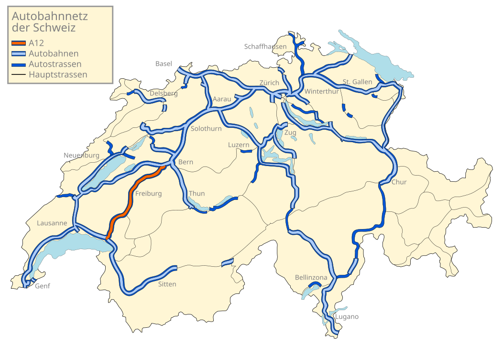
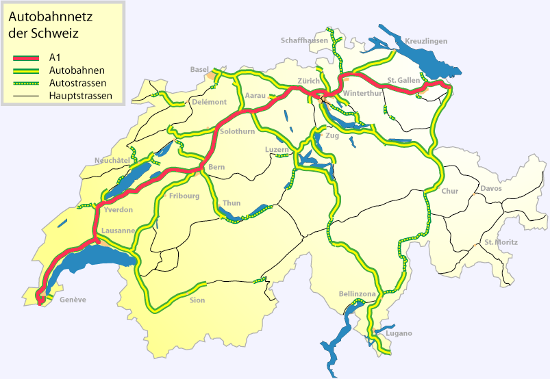

Pour aller à Fribourg depuis genève, on peut prendre le train ou la voiture pour y arriver le plus rapidement. Temps en voiture: environ 1 h 41 Km en voiture: 135 à 142 km Autoroutes: A1 et A12 (vignette autoroutière suisse requise) Temps en train: environ 1h 28min Prix en train: 28 CHF


Comment aller a Fribourg?
Pour aller à Fribourg depuis genève, on peut prendre le train ou la voiture pour y arriver le plus rapidement.
Temps en voiture: environ 1 h 41
Km en voiture: 135 à 142 km
Autoroutes: A1 et A12 (vignette autoroutière suisse requise)
Temps en train: environ 1h 28min
Prix en train: 28 CHF
Gare Cornavin
Gare de Fribourg
Autoroute A12

Autoroute A1
